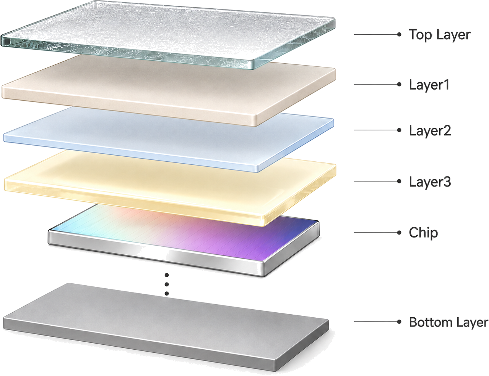
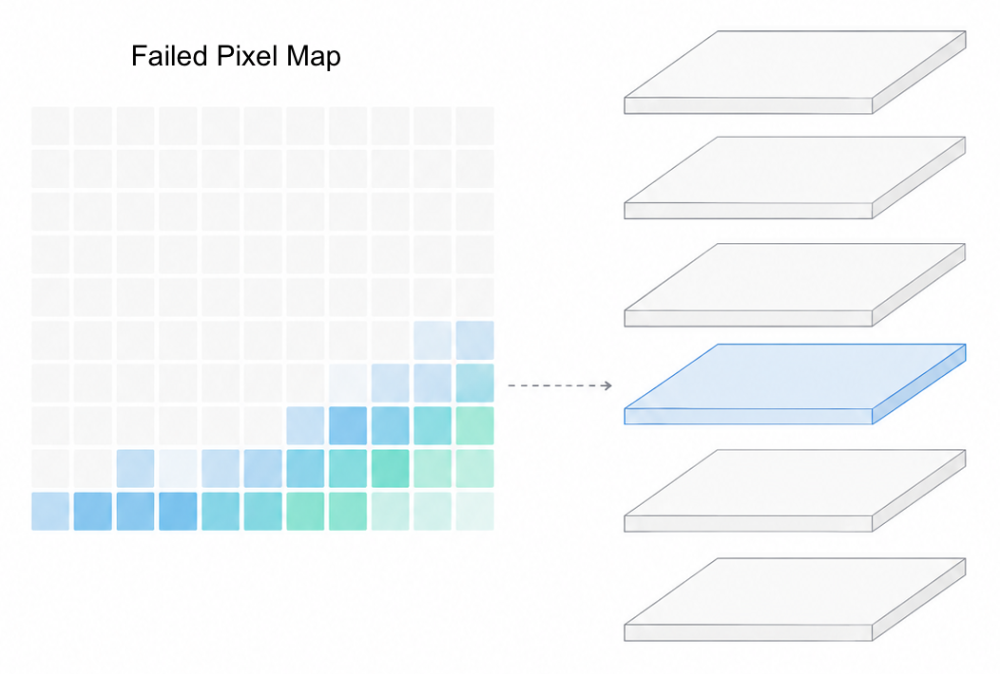
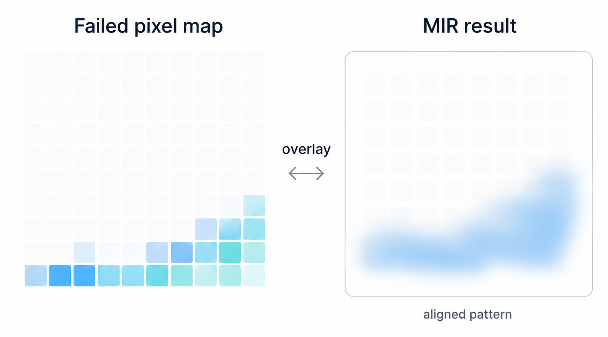
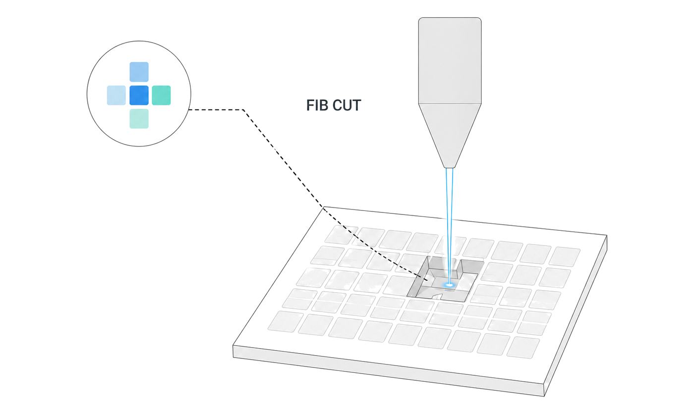

Case 01
Multilayer Module Failure Localization & Root Cause Investigation
Localized a sensing-voltage abnormality by correlating functional failure data with physical evidence and progressively testing competing failure hypotheses across a buried multilayer structure.
Challenge
Pixel-Level Localization Through a Multilayer Stack
Sequential layer exposure maintained spatial registration with the failed-pixel location
while preserving the surrounding evidence for subsequent analysis.
Failure-Relevant Feature Assessment Across Structural Variation
Spatial correlation with the failed-pixel location helped identify which particles, thickness
variations, and interface features were relevant to the failure.

Strategy
Functional-to-Physical Localization
Used failed-pixel distribution and module architecture to define the physical region of interest.

Cross-Method Evidence Correlation
Spatially correlated LIT, CSAM, and CT findings with the failed-pixel distribution to identify evidence consistent with the electrical failure pattern.

Site-Specific Chip Verification
Transferred failed-pixel coordinates to the physical sample and performed targeted FIB analysis to assess direct chip-level damage.

Adjacent-Layer Investigation
Extended FIB analysis into the immediately adjacent region to evaluate nearby structural features after direct chip damage was not supported.
My Contribution
-
Select Region
Initial Localization to the Sensing-Chip Region
Used failed-pixel distribution and module architecture to define
the first-priority region of interest before destructive analysis. -
Weigh Evidence
Spatial Correlation of Nondestructive Evidence
Compared LIT, CSAM, and CT findings with failed-pixel locations
to determine which indications were spatially relevant and worth pursuing. -
Refine Hypothesis
FIB Assessment at the Selected Pixel
Site-specific FIB analysis found no direct damage at the selected pixel,
shifting the investigation away from intrinsic chip failure. -
Redirect Analysis
Redirecting the Analysis to Adjacent Structural Layers
Used the negative FIB result to shift follow-up cross-sectional analysis
toward chip-adjacent layers and evaluate alternative structural causes.
Conclusion
Failure Region Narrowed
The investigation converged from the full multilayer stack to the sensing-chip region and adjacent structural layers.
Direct Chip Damage Deprioritized
FIB analysis found no obvious chip damage or foreign-material intrusion, shifting attention away from intrinsic chip failure.
Structural Improvement Direction Defined
Prioritized layer geometry, thickness uniformity, and particle control near the affected region for follow-up validation and design improvement.